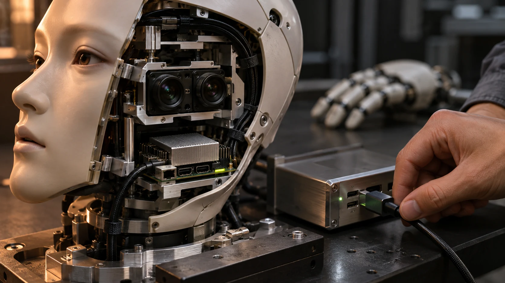

Investigate the age and timing origin of observations before changing the robot's perception settings. A clear image and a high update rate do not, by themselves, establish that data is timely.
A humanoid reaches toward a part that appears clearly in its camera view, yet the intended contact point seems to move behind the real object. The immediate temptation is to adjust the vision model or repeat a calibration. Another question deserves an earlier answer: when was the observation made, and how long did it take to reach the decision that used it? This guide proposes a documented timing investigation for an integration team. It is a practical workflow, not a measured performance comparison or a claim that one software package can repair an undocumented sensor pipeline.
Describe the symptom before choosing the fix
Start with a specific observation that another person could recognize. Write down the task phase, the camera configuration, the software versions and the conditions under which the problem appears. Keep the distinction between an object moving in the world and the robot moving its own sensor. A stationary demonstration may hide a timing problem that becomes visible only when viewpoints change.
Create a short comparison plan with the responsible integrator. Use the robot manufacturer's supported commissioning conditions and avoid adding an improvised motion test merely to obtain a more dramatic recording. Note whether the symptom changes after a restart, during a long session or when additional processing is enabled. These observations help choose what to measure next; they do not establish the cause. A useful investigation begins with a repeatable question rather than a favorite explanation.
Identify the time behind every timestamp
Ask the sensor or driver supplier what an observation's timestamp represents. Is it assigned at capture, after processing or at another documented point? Record that answer beside the device and driver version. Two messages can carry plausible-looking timestamps while referring to different stages of their journeys. Subtracting those values without understanding their origin can produce a precise number with an uncertain meaning.
The ROS 2 Clock and Time design distinguishes system, steady and ROS time. ROS time can follow an active time source, and replay may involve pauses or jumps. Document which clock each relevant component uses and how device time is mapped into the application's timeline. Treat inconsistent or unexplained time domains as an integration question to resolve before interpreting delay measurements. A message matching policy does not establish that independent device clocks agree.
Measure a path rather than a single rate
Draw the observation's route from the sensor to the software that consumes it. Include the driver, transport, image conversion, inference and any application queue that the team can identify. For each point that can be instrumented, state what the recorded time means. Distinguish the measurement's scope from stages that remain invisible. A measurement at a receiving callback describes that boundary; it cannot automatically reveal what happened inside a camera.
Compare an agreed baseline with one controlled configuration change. Keep the scene, software revision and logging method consistent enough to make that comparison useful. Preserve individual samples and notable pauses rather than reporting only an average. Also record whether enabling the measurement changes the behavior being investigated. The aim is a traceable explanation of where observations become old, not a universal latency target borrowed from an unrelated robot.

Separate matching messages from making them timely
ROS 2 message_filters provides policies that group observations using their timestamps. Its official documentation describes ExactTime matching equal stamps and ApproximateTime matching based on timestamps through an adaptive policy. These tools help express which observations an algorithm receives together; they are not evidence that those observations were captured simultaneously or delivered promptly.
When reviewing a synchronization configuration, document the inputs, their timestamp origins and the intended meaning of a matched group. Avoid enlarging a matching tolerance simply to make a callback appear more often. That can change which observations are considered together while leaving the underlying investigation unanswered. Ask the software owner to explain how an unmatched, delayed or missing input is handled. Verify the behavior in the installed distribution and package version instead of assuming that an example from a different release describes the deployed system.
Record enough context to reproduce the question
The official rosbag2 project documents recording selected topics and replaying recorded data. It also describes simulation-time recording and its dependence on the clock topic. Use the documentation appropriate to the installed release, and keep the actual recording command and configuration with the resulting dataset. A file on disk is the beginning of an evidence package, not proof that every needed observation arrived.
Choose the information required for the question, with attention to camera data, relevant state observations and configuration context. Record start and stop conditions, the software revision, and any known recording limitations. Review the dataset before dismantling the experiment. During replay, isolate analysis from live robot actuation using the team's established procedure. A replay is valuable for comparing software interpretations of a captured sequence, but it does not recreate every physical or communication condition of the original run.
Turn the result into a maintainable decision
Write the conclusion at the level supported by the evidence. Perhaps a delay appears only when a particular processing stage is enabled; perhaps the timestamps still cannot be compared because a driver convention remains undocumented. Both are useful outcomes when the record explains the conditions and the remaining uncertainty. Avoid converting a single successful rerun into a general claim about the platform.
Attach the route diagram, relevant configurations and a small representative dataset to the issue shared with the supplier. State the proposed change and the comparison that would demonstrate its effect. After an accepted change, repeat the agreed checks and preserve the new baseline. Timing then becomes part of the maintained robot configuration, alongside calibration and software versions. That makes the next sensor, kit or compute upgrade easier to evaluate without starting the investigation from memory.
Your next step.
- Document what each sensor timestamp represents and which clock it uses.
- Separate observation matching from observation age.
- Keep the recording command, software revision and test conditions together.
- Review recorded data before ending the experiment.
- Confirm conclusions with the responsible integrator and preserve the new baseline.
Sources & further reading
Primary sources and manufacturer documentation for the examples and further investigation. Recommendations in this article are HUMANOID’s editorial guidance.
ROS 2: Clock and Time design ↗ROS 2 message_filters: official synchronization documentation ↗ROS 2 rosbag2: official recording and replay documentation ↗Prepared and references reviewed: 6 November 2026. This original practical guide does not report an independent robot performance test. Software behavior and options must be checked against the installed release.